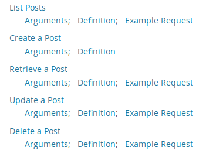

Appetite for dysfunction
Andrew McCluskey McMiddlin
2018-08-27
Intro
What and why?
Outline
- WordPress
- Property based testing
- State machine testing
- NixOps
dependent-mapservantto talk web- Putting it together
WordPress
31% of the web uses WordPress, from hobby blogs to the biggest news sites online.
— wordpress.org
Over 60 million people have chosen WordPress to power the place on the web they call “home”
— wordpress.org
- Started in 2003 as a fork of b2, which was started in 2001
- Uses PHP and MySQL
- REST API using JSON (under specified)
Property based testing
Apply functions to randomly generated inputs and ensuring that desirable properties hold.
Example
-- Reverse is involutive
propReverse :: Property
propReverse =
property $ do
-- Reverse is involutive
propReverse :: Property
propReverse =
property $ do
xs <- forAll $ Gen.list (Range.linear 0 100) Gen.alpha
-- Reverse is involutive
propReverse :: Property
propReverse =
property $ do
xs <- forAll $ Gen.list (Range.linear 0 100) Gen.alpha
reverse (reverse xs) === xsShrinking
[ 'w','K','E','y','P','z','m','o','i','N','G','I','X','X'
, 'v','l','q','X','n'
]['a','b']State machine testing
State machines
State machine testing
- Model application as a state machine
- Generate inputs to transition between states
- Execute inputs against real application
- Update model to reflect expected state changes
- At each step, check no invariants are broken
Example
WordPress example
Deploying with NixOps
Nix
Purely functional language for package management.
NixOS
The purely functional Linux distribution built on top of the Nix package manager.
NixOps
A tool for deploying NixOS machines.
WordPress specification
wpPackage = pkgs.fetchFromGitHub {
owner = "WordPress";
repo = "WordPress";
rev = "4.9.7";
sha256 = "1kxwk7mqhi9n...";
};basicAuthPlugin = pkgs.stdenv.mkDerivation {
};basicAuthPlugin = pkgs.stdenv.mkDerivation {
name = "basic-auth-plugin";
};basicAuthPlugin = pkgs.stdenv.mkDerivation {
name = "basic-auth-plugin";
src = pkgs.fetchurl {
url = https://github.com/WP-API/Basic-Auth/...8.zip;
sha256 = "b7f4fe0e6064040...";
};
};basicAuthPlugin = pkgs.stdenv.mkDerivation {
name = "basic-auth-plugin";
src = pkgs.fetchurl {
url = https://github.com/WP-API/Basic-Auth/...8.zip;
sha256 = "b7f4fe0e6064040...";
};
buildInputs = [ pkgs.unzip ];
installPhase = "mkdir -p $out; cp -R * $out/";
};twentySeventeen = pkgs.stdenv.mkDerivation {
name = "theme-twenty-seventeen";
src = pkgs.fetchurl {
url = https://.../twentyseventeen.1.6.zip;
sha256 = "0cch9bvap4r0775f...";
};
buildInputs = [ pkgs.unzip ];
installPhase = "mkdir -p $out; cp -R * $out/";
};services.mysql = {
enable = true;
package = pkgs.mysql;
initialScript = ./init.sql;
};services.httpd = {
};services.httpd = {
...
virtualHosts = [{
hostName = "wordpress";
}];
};services.httpd = {
...
virtualHosts = [{
hostName = "wordpress";
extraSubservices = [{
...
serviceType = "wordpress";
}];
}];
};services.httpd = {
...
virtualHosts = [{
hostName = "wordpress";
extraSubservices = [{
...
serviceType = "wordpress";
package = wpPackage;
}];
}];
};services.httpd = {
...
virtualHosts = [{
hostName = "wordpress";
extraSubservices = [{
...
serviceType = "wordpress";
package = wpPackage;
plugins = [ basicAuthPlugin ];
themes = [ twentySeventeen ];
}];
}];
};# HTTP, HTTPS, MySQL
networking.firewall.allowedTCPPorts = [ 80 443 3306 ];Machine specification
{
wordpress =
{ config, pkgs, ... }:
}{
wordpress =
{ config, pkgs, ... }:
{ deployment.targetEnv = "virtualbox";
};
}{
wordpress =
{ config, pkgs, ... }:
{ deployment.targetEnv = "virtualbox";
deployment.virtualbox.memorySize = 4096; # megabytes
deployment.virtualbox.vcpu = 4; # number of cpus
};
}{
wordpress =
{ config, pkgs, ... }:
{ deployment.targetEnv = "virtualbox";
deployment.virtualbox.memorySize = 4096; # megabytes
deployment.virtualbox.vcpu = 4; # number of cpus
deployment.virtualbox.headless = true;
};
}Deploying
$ nixops create ./wp.nix ./wp-vbox.nix -d wp
$ nixops create ./wp.nix ./wp-vbox.nix -d wp
$ nixops deploy -d wp
$ nixops create ./wp.nix ./wp-vbox.nix -d wp
$ nixops deploy -d wp
$ nixops info -d wp
$ nixops create ./wp.nix ./wp-vbox.nix -d wp
$ nixops deploy -d wp
$ nixops info -d wp
$ nixops ssh -d wp wordpressDMap
{
"date": "1900-01-01T12:00:00",
"date_gmt": "1900-01-01T12:00:00",
"modified": "1900-01-01T12:00:00",
"modified_gmt": "1900-01-01T12:00:00",
"password": "",
"slug": "a",
"status": "publish",
"type": "post",
"link": "http://192.168.56.101/1900/01/01/a/",
"title": "foo",
"content": "bar",
"excerpt": "baz",
"author": 1,
"featured_media": 0,
"comment_status": "open",
"ping_status": "open",
"sticky": false,
"template": "",
"format": "standard",
"meta": [],
"categories": [],
"tags": []
}{
"title": "A post"
}Maybe?
data Post =
Post
{ _postDate :: Maybe LocalTime
, _postDateGmt :: Maybe LocalTime
, _postPassword :: Maybe Text
-- ...
}A type for each use?
DMap
data Map k vdata DMap (key :: v -> *) (f :: k -> *)data PostKey a where
PostTitle :: PostKey Text
PostStatus :: PostKey Status
PostAuthor :: PostKey Int
...aPost :: DMap PostKey Identity
aPost =
fromList [ PostTitle :=> Identity "Hello Compose"
, PostStatus :=> Identity Publish
, PostAuthor :=> Identity 1
]aPost :: Applicative f => DMap PostKey f
aPost =
fromList [ PostTitle ==> "Hello Compose"
, PostStatus ==> Publish
, PostAuthor ==> 1
]class Eq a => Ord a where
compare :: a -> a -> Ordering
...
instance Ord (PostKey a) where
compare :: PostKey a -> PostKey a -> Ordering
...
class GEq f => GCompare (key :: v -> *) where
gcompare :: key a -> key b -> GOrdering a b deriveGEq ''PostKey
deriveGCompare ''PostKeyservant
API -> ClientFunctions
type Posts =
"posts" :> (
List
:<|> Auth :> List
:<|> Auth :> Id :> Get '[JSON] PostMap
:<|> Auth :> ReqBody '[JSON] PostMap :>
Post '[JSON] PostMap
:<|> Auth :> Id :> ReqBody '[JSON] PostMap :>
Post '[JSON] PostMap
:<|> Auth :> Id :> QueryParam "force" NoForceDelete :>
Delete '[JSON] DeletedPost
:<|> Auth :> Id :> QueryParam' "force" ForceDelete :>
Delete '[JSON] DeletedPost
)
type List = QueryParamMap ListPostsKey Identity :>
Get '[JSON] [PostMap]
type Auth = BasicAuth "wordpress" ()
type Id = Capture "id" Int( listPosts
:<|> listPostsAuth
:<|> getPost
:<|> createPost
:<|> updatePost
:<|> deletePost
:<|> deletePostForce ) = client postsAPIQuery parameters
data ListPostsKey a where
ListPostsContext :: ListPostsKey Context
ListPostsPage :: ListPostsKey Int
ListPostsPerPage :: ListPostsKey Int
ListPostsSearch :: ListPostsKey Text
ListPostsAfter :: ListPostsKey LocalTime
ListPostsAuthor :: ListPostsKey Author
ListPostsAuthorExclude :: ListPostsKey (NonEmpty Author)
ListPostsBefore :: ListPostsKey LocalTime
ListPostsExclude :: ListPostsKey (NonEmpty Int)
ListPostsInclude :: ListPostsKey (NonEmpty Int)
ListPostsOffset :: ListPostsKey Int
ListPostsOrder :: ListPostsKey Order
ListPostsSlug :: ListPostsKey (NonEmpty Text)
ListPostsStatus :: ListPostsKey Status
ListPostsCategories :: ListPostsKey (NonEmpty Text)
ListPostsCategoriesExclude :: ListPostsKey (NonEmpty Text)
ListPostsTags :: ListPostsKey (NonEmpty Text)
ListPostsTagsExclude :: ListPostsKey (NonEmpty Text)
ListPostsSticky :: ListPostsKey Stickytype List = QueryParamMap ListPostsKey Identity :>
Get '[JSON] [PostMap]data QueryParamMap (key :: * -> *) (f :: * -> *)
data QueryParamMap (key :: * -> *) (f :: * -> *)
instance (ToQueryParamKeyValues key f, HasClient api)
=> HasClient (QueryParamMap key f :> api) where
data QueryParamMap (key :: * -> *) (f :: * -> *)
instance (ToQueryParamKeyValues key f, HasClient api)
=> HasClient (QueryParamMap key f :> api) where
type Client (QueryParamMap key f :> api) =
DMap key f -> Client api
data QueryParamMap (key :: * -> *) (f :: * -> *)
instance (ToQueryParamKeyValues key f, HasClient api)
=> HasClient (QueryParamMap key f :> api) where
type Client (QueryParamMap key f :> api) =
DMap key f -> Client api
clientWithRoute ::
Proxy (QueryParamMap key f :> api)
-> Req
-> Client (QueryParamMap key f :> api)
data QueryParamMap (key :: * -> *) (f :: * -> *)
instance (ToQueryParamKeyValues key f, HasClient api)
=> HasClient (QueryParamMap key f :> api) where
type Client (QueryParamMap key f :> api) =
DMap key f -> Client api
clientWithRoute ::
Proxy (QueryParamMap key f :> api)
-> Req
-> Client (QueryParamMap key f :> api)
clientWithRoute Proxy req dm =
let
addPair (k, v) = appendToQueryString k (Just v)
f ka fa req' =
foldr addPair req' $ toQueryParamKeyValues ka fa
in
clientWithRoute (Proxy :: Proxy api) $
DM.foldrWithKey f req dmPutting it together
State
type Posts v = Map (Var Int v) StatePost
newtype WPState (v :: * -> *) =
WPState
{ _posts :: Posts v
}
deriving (Eq, Show)
Inputs
newtype CreatePost (v :: * -> *) =
CreatePost PostMap
deriving (Show)
newtype CreatePost (v :: * -> *) =
CreatePost PostMap
deriving (Show)
data DeletePost (v :: * -> *) =
DeletePost (Var Int v) (Maybe Bool)
deriving (Show)
newtype CreatePost (v :: * -> *) =
CreatePost PostMap
deriving (Show)
data DeletePost (v :: * -> *) =
DeletePost (Var Int v) (Maybe Bool)
deriving (Show)
data UpdatePost (v :: * -> *) =
UpdatePost (Var Int v) PostMap
deriving (Show)
newtype CreatePost (v :: * -> *) =
CreatePost PostMap
deriving (Show)
data DeletePost (v :: * -> *) =
DeletePost (Var Int v) (Maybe Bool)
deriving (Show)
data UpdatePost (v :: * -> *) =
UpdatePost (Var Int v) PostMap
deriving (Show)
newtype GetPost (v :: * -> *) =
GetPost (Var Int v)
deriving (Show)Creating posts
cCreatePost env@Env{..} =
let
in
cCreatePost env@Env{..} =
let
gen = Just . fmap CreatePost . genPost
in
cCreatePost env@Env{..} =
let
gen = Just . fmap CreatePost . genPost
exe (CreatePost pm) = do
annotateShow pm
annotateShow $ encode pm
in
cCreatePost env@Env{..} =
let
gen = Just . fmap CreatePost . genPost
exe (CreatePost pm) = do
annotateShow pm
annotateShow $ encode pm
let create =
fmap (runIdentity . (DM.! PostId))
(createPost (auth env) pm)
in
cCreatePost env@Env{..} =
let
gen = Just . fmap CreatePost . genPost
exe (CreatePost pm) = do
annotateShow pm
annotateShow $ encode pm
let create =
fmap (runIdentity . (DM.! PostId))
(createPost (auth env) pm)
evalEither =<< liftIO (runClientM create servantClient)
in
cCreatePost env@Env{..} =
let
gen = Just . fmap CreatePost . genPost
exe (CreatePost pm) = do
annotateShow pm
annotateShow $ encode pm
let create =
fmap (runIdentity . (DM.! PostId))
(createPost (auth env) pm)
evalEither =<< liftIO (runClientM create servantClient)
in
Command gen exe [
Update $ \s (CreatePost p) o ->
posts . at o ?~ StatePost p $ s
]Updating posts
cUpdatePost env@Env{..} =
let
gen s =
(flip UpdatePost <$> genPost s <*>) <$> genId s
exe (UpdatePost pId pm) = do
annotateShow pm
annotateShow $ encode pm
let update =
fmap (runIdentity . (DM.! PostId))
(updatePost (auth env) (concrete pId) pm)
evalEither =<< liftIO (runClientM update servantClient)
in
Command gen exe [
Require $ \s (UpdatePost varId _) ->
s ^. posts . at varId & not . null
, Update $ \s (UpdatePost pId p) _ ->
posts . at pId ?~ StatePost p $ s
]
Require $ \s (UpdatePost varId _) ->
s ^. posts . at varId & not . null
Getting posts
cGetPost now env@Env{..} =
let
gen s =
(fmap . fmap) GetPost $ genId s
exe (GetPost varId) = do
let
get = getPost (auth env) (concrete varId)
evalEither =<< liftIO (runClientM get servantClient)
in
Command gen exe [
Require $ \s (GetPost varId) ->
s ^. posts . at varId & not . null
, Ensure $ \_so sn (GetPost varId) p -> do
stateMap <- eval $ (sn ^. posts) M.! varId
annotateShow stateMap
annotateShow p
postsEq now stateMap p
]
Ensure $ \_so sn (GetPost varId) p -> do
stateMap <- eval $ (sn ^. posts) M.! varId
annotateShow stateMap
annotateShow p
postsEq now stateMap p
Conclusion
State machine testing
- Very powerful technique to test stateful systems.
- App being tested doesn’t have to use Haskell or FP.
NixOps
- Referentially transparent specification of a deployment.
- Deploy in a few commands.
DMap
- Heterogenous mapping of keys to values that preserves type safety.
- Good for more “dynamic” APIs and loose specs.
servant
- Declare your API as a type and get client functions for free.
- Allows us to extend it’s API language as necessary.
Go forth and test!
References
Code
wp-tests
https://github.com/qfpl/wp-tests
Talks
Gens N’ Roses: Appetite for Reduction
https://www.youtube.com/watch?v=AIv_9T0xKEo
Property-based State Machine Testing
https://www.youtube.com/watch?v=boBD1qhCQ94
Nix
DMap
dependent-map
https://hackage.haskell.org/package/dependent-map
dependent-sum
https://hackage.haskell.org/package/dependent-sum
dependent-sum-template
https://hackage.haskell.org/package/dependent-sum-template
Wordpress
WordPress book
https://github.com/WordPress/book/blob/master/Content/Part%201/2-b2-cafelog.md
WordPress REST API reference
[https://developer.wordpress.org/rest-api/reference/](https://developer.wordpress.org/rest-api/reference/**